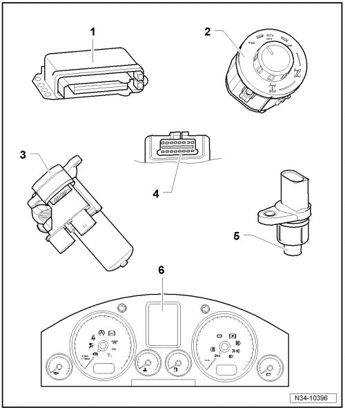
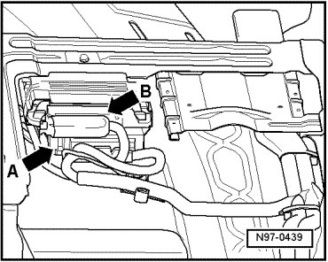
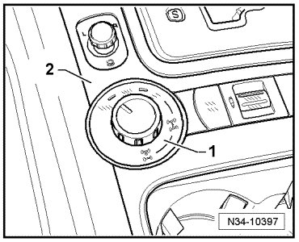
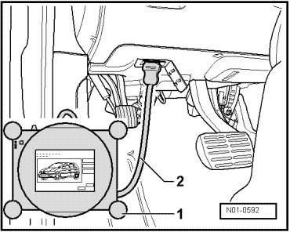
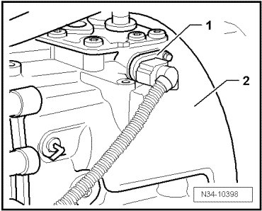

Control Module: Service and Repair
Electrical and Electronic Components and Locations

1 Differential control module (J646)
• Removing and installing, refer to --> [ Differential Control Module ] Differential Control Module.
2 Transfer case operating unit (E473)
• Allocation.
3 Differential motor (V253)
• Installed location --> [ (Item 16) ] Transfer Case Assembly Overview.
• Removing and installing, refer to --> [ Differential Motor ] Differential Motor.
• The following components are integrated into the differential motor (V253):
Differential position sensor (G398)
Differential position sensor 2 (G482)
Motor temperature sensor (G407)
Brake for locking motor
4 Data Link Connector (DLC)
5 Closed Throttle Position (CTP) switch (F60)
• Only installed on vehicles with manual transmission.
6 Multi function display in instrument panel insert
• Indicates condition and information about longitudinal lock and off road gearing in transfer case.
Component Location of Differential Control Module (J646)

The differential control module (J646) is located under the front right seat - arrow B -.
Differential control module (J646), removing and installing. Refer to --> [ Differential Control Module ] Differential Control Module.
Component Location of Transfer Case Operating Unit (E473)

The transfer case operating unit (E473) - 1 - is located in the shift cover - 2 - of the center console.
Transfer case operating unit (E473), removing and installing.
DLC

The DLC is located in the cover of the driver's side footwell.
Component Location of CTP Switch (F60)

The CTP switch (F60) - 1 - is located in the area of the shift cover with rocker switches on the manual transmission - 2 -.